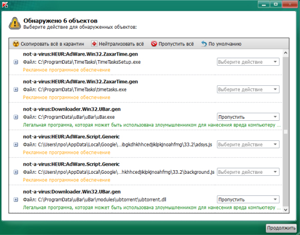

1. Состав исполнителей:
Состав исполнителей на железнодорожных участках:
| Исполнители |
Разряд квалификации не менее |
Количество исполнителей |
| Инженер сервисной организации |
- |
1 |
| Электромеханик центрального поста |
- |
1 |
2. Условия производства работ
2.1. Антивирусная профилактика производится только на находящемся в резерве автоматизированном рабочем месте поездного диспетчера (далее – АРМ ДНЦ) и Сервере стойки поста ДЦ.
ВНИМАНИЕ: При отсутствии резервирования АРМ ДНЦ, работа выполняется в технологическое «окно» с согласия поездного диспетчера.
2.2. Работа производится электротехническим персоналом, имеющим группу по электробезопасности при работе в электроустановках до 1000 В не ниже III, перед началом работ проинструктированным в установленном порядке.
2.3. К работе допускается обслуживающий персонал, прошедший специальную подготовку и выдержавший испытания в знаниях условий эксплуатации системы в соответствии с процедурами, принятыми в ОАО «РЖД».
2.4. Допуск на объект, оформление записей в журналах, контроль качества работ, выполняемых подрядными организациями, участие в приемке выполненных работ осуществляется эксплуатационным персоналом в соответствии с требованиями Инструкции по техническому обслуживанию и ремонту устройств и систем сигнализации, централизации и блокировки, утвержденной распоряжением ОАО «РЖД» от 30 декабря 2015 г. № 3168р.
3. Средства защиты, измерений, технологического оснащения; монтажные приспособления, испытательное оборудование, инструменты, техническая документация
Диспетчерская централизация ДЦ «Юг». Руководство по эксплуатации 36818650.39003.001-01 РЭ;
Диспетчерская централизация ДЦ «Юг». Технология обслуживания. Технологические карты по техническому обслуживанию ДЦ «Юг» на базе КП «Круг» 36818650.39003.001-01 ТО;
Внешний носитель с антивирусной программой
4. Подготовительные мероприятия
4.1. Подготовить техническую документацию и средства технологического оснащения, указанные в разделе 3.
5. Обеспечение безопасности движения поездов
5.1. Антивирусная профилактика производится в технологическое «окно» с согласия поездного диспетчера (далее – ДНЦ).
5.2. Работа выполняется с оформлением записи в Журнале осмотра путей, стрелочных переводов, устройств сигнализации, централизации и блокировки, связи и контактной сети формы ДУ-46 (далее – Журнал осмотра).
5.3. При выполнении работы обеспечить безопасность движения в соответствии с требованиями Инструкции по обеспечению безопасности движения поездов при технической эксплуатации устройств и систем СЦБ ЦШ-530-11, утвержденной распоряжением ОАО «РЖД» от 20 сентября 2011 г. № 2055р.
Примечание. Здесь и далее по тексту целесообразно проверить действие ссылочных документов. Если ссылочный документ заменен (изменен), то при пользовании данной картой технологического процесса следует руководствоваться заменяющим (измененным) документом. Если ссылочный документ отменен без замены, то применяется та часть текста, где не затрагивается ссылка на этот документ
6. Обеспечение требований охраны труда
6.1. При выполнении технологических операций следует руководствоваться требованиями «Инструкции по охране труда для электромеханика и электромонтера устройств сигнализации, централизации и блокировки в ОАО «РЖД» от 03 ноября 2015 № 2616р и «Правилами по охране труда при техническом обслуживании и ремонте устройств сигнализации, централизации и блокировки в ОАО «РЖД» (ПОТ РЖД-4100612-ЦШ-215-2021), утверждёнными распоряжением ОАО «РЖД» от 19 февраля 2021 г. №346/р.
ВНИМАНИЕ. Место работ должно иметь достаточное для их производства освещение. При необходимости следует применять переносные осветительные приборы.
7. Технология выполнения работ
Антивирусная профилактика
Антивирусная профилактика проводится на системных блоках АРМ ДНЦ, АРМ ШН, станции связи, шлюза и сервера. С помощью утилиты «Kaspersky Virus Removal Tool», записанной на внешний носитель. Данная антивирусная программа не требует установки на ПЭВМ и предназначена для обнаружения вирусов, троянов, потенциально опасных программ.
7.1. Оформить запись в Журнале осмотра.
Пример записи:
В технологическое «окно» специалистами сервисной организации будет производиться антивирусная профилактика системных блоков АРМ ДНЦ, шлюза, станции связи, сервера и АРМ ШН.
ШНД
ДНЦ
7.2. Вставить внешний носитель с антивирусной программой в USB-разъем системного блока резервного АРМ ДНЦ.
7.3. Запустить антивирусную программу (Рисунок 1).
Рисунок 1. Начальное окно антивирусной программы.
7.4. Запустить проверку, нажав значок «Начать проверку» (Рисунок 2).
Рисунок 2. Запуск проверки.

Значок «Начать проверку»
ВНИМАНИЕ: Перед проверкой убедиться, что на флэш-диске актуальная версия антивирусной программы (Рисунок 3).
ВНИМАНИЕ: Проверка может занять несколько минут и зависит от количества файлов на дисках, установленных на проверяемом системном блоке.
Рисунок 3. Проверка актуальной версии.
7.5. По окончании проверки появляется окно либо «угроз не обнаружено», либо «обнаружено N-объектов». При отсутствии угроз выполнить пункт 7.8, при выявлении угроз выполнить пункт 7.6.
7.6. При выявлении угроз появляется в окне следующая информация (Для примера, выявлено 6 объектов) (Рисунок 4).

Рисунок 4. Окно с выявленными угрозами.
7.7. Нажать на значок «Нейтрализовать все», после чего напротив каждого выбранного объекта появится надпись «удалить». Нажать на значок «Продолжить» и все выбранные объекты будут удалены (Рисунок 5).
ВНИМАНИЕ: После удаления объектов с угрозами необходимо перезагрузить системный блок.
Рисунок 5. Удаление объектов.
Выбор действия
Принятое решение
Подтверждение действия
7.8. Извлечь внешний носитель с антивирусной программой из USB-разъема системного блока.
7.9. Провести переключение активности с основного АРМ ДНЦ на резервный согласно ТНК ЦШ 0197-2016.
7.10. Выполнить антивирусную профилактику на основном АРМ ДНЦ в соответствии с пунктами 7.2-7.8.
7.11. Выполнить антивирусную профилактику на системных блоках шлюза в соответствии с пунктами 7.2-7.8.
7.12. Выполнить антивирусную профилактику на системных блоках станции связи в соответствии с пунктами 7.2-7.8.
7.13. Выполнить антивирусную профилактику на системных блоках сервера в соответствии с пунктами 7.2-7.8.
7.14. Выполнить антивирусную профилактику на системном блоке АРМ ШНД в соответствии с пунктами 7.2-7.8.
7.15. По окончании работы сделать запись в Журнале осмотра.
Пример записи:
Антивирусная профилактика на системных блоков АРМ ДНЦ, шлюза, станции связи, сервера и АРМ ШН специалистами сервисной организации завершена. Устройства проверены, работают нормально.
ШНД
ДНЦ
7.16. Заполнить форму отчетных документов, представленную в таблице 1.
Таблица 1.
| Дата |
Результат
проверки |
Принятые меры при
обнаружении несоответствия |
Фамилия И.О.
исполнителя |
Подпись |
| ... |
... |
... |
... |
... |
| ... |
... |
... |
... |
... |
8. Заключительные мероприятия, оформление результатов работы
После окончания антивирусной профилактики оповестить ДНЦ об окончании работы, сделать запись в журнале ШУ-2 о проведенной работе и внести результаты выполнения работы в систему ЕК АСУИ в соответствии с требованиями, изложенными в разделе 4 «Порядка планирования, учета и контроля выполнения работ в хозяйстве автоматики и телемеханики», утверждённого распоряжением ОАО «РЖД» от 13 января 2020 г. №20/р.
Результаты работы по сопровождению программного обеспечения специализированная организация оформляет в журнале учета выполненных работ по техническому обслуживанию и ремонту устройств и систем ЖАТ по форме, представленной в регламенте взаимодействия между участниками процесса технического обслуживания и ремонта систем и устройств железнодорожной автоматики и телемеханики ОАО «РЖД», осуществляемых специализированными организациями, утвержденном распоряжением ОАО «РЖД» от 30 декабря 2017 г. № 2827р.
Начальник отдела ПКБ И
Конструктор 1 категории ПКБ И
Е.Н. Иванов
В.В. Харламов